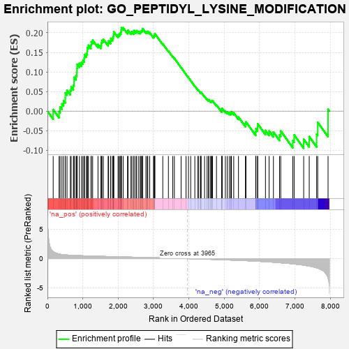
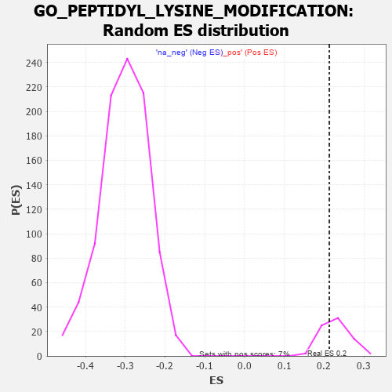

| | | Dataset | 7d |
| Phenotype | NoPhenotypeAvailable |
| Upregulated in class | na_pos |
| GeneSet | GO_PEPTIDYL_LYSINE_MODIFICATION |
| Enrichment Score (ES) | 0.2130865 |
| Normalized Enrichment Score (NES) | 0.92899257 |
| Nominal p-value | 0.6486486 |
| FDR q-value | 0.80154777 |
| FWER p-Value | 1.0 |
Table: GSEA Results Summary

Fig 1: Enrichment plot: GO_PEPTIDYL_LYSINE_MODIFICATION
Profile of the Running ES Score & Positions of GeneSet Members on the Rank Ordered List
| PROBE | GENE SYMBOL | GENE_TITLE | RANK IN GENE LIST | RANK METRIC SCORE | RUNNING ES | CORE ENRICHMENT | | 1 | SPI1 | | | 162 | 1.182 | 0.0039 | Yes |
| 2 | NUP85 | | | 329 | 0.772 | -0.0012 | Yes |
| 3 | ARNT | | | 357 | 0.741 | 0.0108 | Yes |
| 4 | EED | | | 409 | 0.690 | 0.0186 | Yes |
| 5 | HAT1 | | | 454 | 0.659 | 0.0267 | Yes |
| 6 | MYOD1 | | | 504 | 0.628 | 0.0335 | Yes |
| 7 | NUP54 | | | 505 | 0.627 | 0.0466 | Yes |
| 8 | JMJD6 | | | 553 | 0.613 | 0.0533 | Yes |
| 9 | NOC2L | | | 647 | 0.578 | 0.0535 | Yes |
| 10 | PLOD1 | | | 670 | 0.570 | 0.0625 | Yes |
| 11 | WDR61 | | | 734 | 0.549 | 0.0659 | Yes |
| 12 | SUMO3 | | | 753 | 0.544 | 0.0749 | Yes |
| 13 | SETD3 | | | 754 | 0.544 | 0.0863 | Yes |
| 14 | SETD4 | | | 807 | 0.530 | 0.0907 | Yes |
| 15 | RAE1 | | | 827 | 0.524 | 0.0991 | Yes |
| 16 | PHF10 | | | 834 | 0.523 | 0.1092 | Yes |
| 17 | SGF29 | | | 840 | 0.521 | 0.1194 | Yes |
| 18 | HCFC1 | | | 902 | 0.506 | 0.1222 | Yes |
| 19 | CTR9 | | | 964 | 0.492 | 0.1246 | Yes |
| 20 | MEN1 | | | 1003 | 0.483 | 0.1298 | Yes |
| 21 | ING3 | | | 1039 | 0.476 | 0.1353 | Yes |
| 22 | TAF9 | | | 1046 | 0.475 | 0.1444 | Yes |
| 23 | BRD8 | | | 1101 | 0.463 | 0.1471 | Yes |
| 24 | NUP93 | | | 1127 | 0.459 | 0.1535 | Yes |
| 25 | KMT2A | | | 1130 | 0.458 | 0.1627 | Yes |
| 26 | NUP43 | | | 1160 | 0.453 | 0.1684 | Yes |
| 27 | KAT8 | | | 1231 | 0.442 | 0.1687 | Yes |
| 28 | KAT7 | | | 1240 | 0.440 | 0.1768 | Yes |
| 29 | LOXL4 | | | 1278 | 0.434 | 0.1812 | Yes |
| 30 | NUP88 | | | 1429 | 0.404 | 0.1704 | Yes |
| 31 | TAF6 | | | 1512 | 0.389 | 0.1681 | Yes |
| 32 | LIAS | | | 1524 | 0.387 | 0.1747 | Yes |
| 33 | DPF3 | | | 1541 | 0.385 | 0.1807 | Yes |
| 34 | TADA3 | | | 1580 | 0.378 | 0.1837 | Yes |
| 35 | PLOD3 | | | 1715 | 0.353 | 0.1740 | Yes |
| 36 | KMT2E | | | 1730 | 0.350 | 0.1795 | Yes |
| 37 | NUP58 | | | 1787 | 0.340 | 0.1794 | Yes |
| 38 | LIPT2 | | | 1792 | 0.339 | 0.1859 | Yes |
| 39 | RTF1 | | | 1844 | 0.329 | 0.1863 | Yes |
| 40 | SMAD4 | | | 1860 | 0.326 | 0.1911 | Yes |
| 41 | NUP62 | | | 1871 | 0.324 | 0.1966 | Yes |
| 42 | RBBP5 | | | 1875 | 0.323 | 0.2029 | Yes |
| 43 | MCRS1 | | | 1996 | 0.305 | 0.1940 | Yes |
| 44 | DMAP1 | | | 2025 | 0.301 | 0.1967 | Yes |
| 45 | IRF4 | | | 2054 | 0.298 | 0.1993 | Yes |
| 46 | KDM3A | | | 2078 | 0.294 | 0.2025 | Yes |
| 47 | BRPF1 | | | 2085 | 0.293 | 0.2078 | Yes |
| 48 | TAF7 | | | 2092 | 0.292 | 0.2131 | Yes |
| 49 | JADE1 | | | 2141 | 0.286 | 0.2129 | No |
| 50 | PRDM5 | | | 2265 | 0.265 | 0.2028 | No |
| 51 | NSD3 | | | 2279 | 0.263 | 0.2066 | No |
| 52 | SIN3A | | | 2361 | 0.251 | 0.2015 | No |
| 53 | SAE1 | | | 2390 | 0.247 | 0.2030 | No |
| 54 | KAT6A | | | 2444 | 0.237 | 0.2012 | No |
| 55 | KDM1A | | | 2447 | 0.237 | 0.2059 | No |
| 56 | KAT2B | | | 2502 | 0.226 | 0.2037 | No |
| 57 | MBD3 | | | 2524 | 0.223 | 0.2057 | No |
| 58 | PIAS2 | | | 2581 | 0.215 | 0.2030 | No |
| 59 | NUP50 | | | 2625 | 0.209 | 0.2019 | No |
| 60 | KAT5 | | | 2644 | 0.206 | 0.2039 | No |
| 61 | EPC1 | | | 2663 | 0.204 | 0.2058 | No |
| 62 | TAF12 | | | 2686 | 0.201 | 0.2072 | No |
| 63 | KDM6A | | | 2690 | 0.200 | 0.2109 | No |
| 64 | NSD2 | | | 2784 | 0.185 | 0.2030 | No |
| 65 | KAT6B | | | 2821 | 0.180 | 0.2021 | No |
| 66 | PHF14 | | | 2838 | 0.178 | 0.2038 | No |
| 67 | WDR5 | | | 2892 | 0.168 | 0.2005 | No |
| 68 | SMYD1 | | | 2998 | 0.150 | 0.1902 | No |
| 69 | BRD7 | | | 3018 | 0.147 | 0.1909 | No |
| 70 | BRCA2 | | | 3024 | 0.146 | 0.1933 | No |
| 71 | PIAS4 | | | 3034 | 0.145 | 0.1951 | No |
| 72 | LEF1 | | | 3037 | 0.144 | 0.1979 | No |
| 73 | NUP98 | | | 3261 | 0.112 | 0.1718 | No |
| 74 | SETD6 | | | 3420 | 0.087 | 0.1535 | No |
| 75 | KMT2C | | | 3544 | 0.069 | 0.1392 | No |
| 76 | MAPK3 | | | 3589 | 0.062 | 0.1349 | No |
| 77 | NSD1 | | | 3779 | 0.031 | 0.1115 | No |
| 78 | IFIH1 | | | 3919 | 0.006 | 0.0939 | No |
| 79 | EYA1 | | | 3987 | -0.006 | 0.0855 | No |
| 80 | ATG5 | | | 4051 | -0.016 | 0.0778 | No |
| 81 | GFI1 | | | 4168 | -0.037 | 0.0638 | No |
| 82 | PAX5 | | | 4255 | -0.051 | 0.0539 | No |
| 83 | RSF1 | | | 4267 | -0.053 | 0.0536 | No |
| 84 | CTBP1 | | | 4323 | -0.064 | 0.0479 | No |
| 85 | GLRX5 | | | 4340 | -0.066 | 0.0472 | No |
| 86 | SETD5 | | | 4343 | -0.067 | 0.0484 | No |
| 87 | SETD2 | | | 4443 | -0.084 | 0.0375 | No |
| 88 | SNW1 | | | 4514 | -0.096 | 0.0306 | No |
| 89 | CXXC1 | | | 4557 | -0.107 | 0.0274 | No |
| 90 | BAG6 | | | 4563 | -0.108 | 0.0290 | No |
| 91 | GATA3 | | | 4614 | -0.120 | 0.0252 | No |
| 92 | GCSH | | | 4633 | -0.125 | 0.0255 | No |
| 93 | TAF10 | | | 4652 | -0.128 | 0.0259 | No |
| 94 | SENP7 | | | 4669 | -0.132 | 0.0266 | No |
| 95 | WBP2 | | | 4780 | -0.153 | 0.0157 | No |
| 96 | ATRX | | | 4929 | -0.184 | 0.0007 | No |
| 97 | SUZ12 | | | 4931 | -0.185 | 0.0044 | No |
| 98 | EP300 | | | 4941 | -0.186 | 0.0071 | No |
| 99 | TAF5 | | | 5031 | -0.204 | 0.0000 | No |
| 100 | ING4 | | | 5084 | -0.221 | -0.0020 | No |
| 101 | FLCN | | | 5140 | -0.235 | -0.0041 | No |
| 102 | HDAC6 | | | 5183 | -0.244 | -0.0044 | No |
| 103 | ASH1L | | | 5203 | -0.248 | -0.0017 | No |
| 104 | WDR82 | | | 5268 | -0.264 | -0.0043 | No |
| 105 | SUMO2 | | | 5402 | -0.296 | -0.0151 | No |
| 106 | SMYD2 | | | 5598 | -0.344 | -0.0328 | No |
| 107 | GNL3 | | | 5614 | -0.349 | -0.0275 | No |
| 108 | HINT2 | | | 5889 | -0.431 | -0.0534 | No |
| 109 | SET | | | 5895 | -0.434 | -0.0450 | No |
| 110 | PCGF2 | | | 5943 | -0.451 | -0.0417 | No |
| 111 | LDB1 | | | 5944 | -0.451 | -0.0323 | No |
| 112 | EGR1 | | | 6165 | -0.527 | -0.0494 | No |
| 113 | ZBED1 | | | 6268 | -0.561 | -0.0507 | No |
| 114 | TRPM4 | | | 6390 | -0.612 | -0.0534 | No |
| 115 | DOHH | | | 6563 | -0.690 | -0.0610 | No |
| 116 | TPR | | | 6597 | -0.709 | -0.0504 | No |
| 117 | DOT1L | | | 6939 | -0.897 | -0.0752 | No |
| 118 | DPY30 | | | 6976 | -0.923 | -0.0606 | No |
| 119 | DYDC1 | | | 7246 | -1.118 | -0.0717 | No |
| 120 | LOXL2 | | | 7403 | -1.269 | -0.0652 | No |
| 121 | IWS1 | | | 7613 | -1.587 | -0.0588 | No |
| 122 | TAF1 | | | 7643 | -1.633 | -0.0285 | No |
| 123 | ARRB1 | | | 7935 | -3.377 | 0.0046 | No |
Table: GSEA details [plain text format]

Fig 2: GO_PEPTIDYL_LYSINE_MODIFICATION: Random ES distribution
Gene set null distribution of ES for GO_PEPTIDYL_LYSINE_MODIFICATION